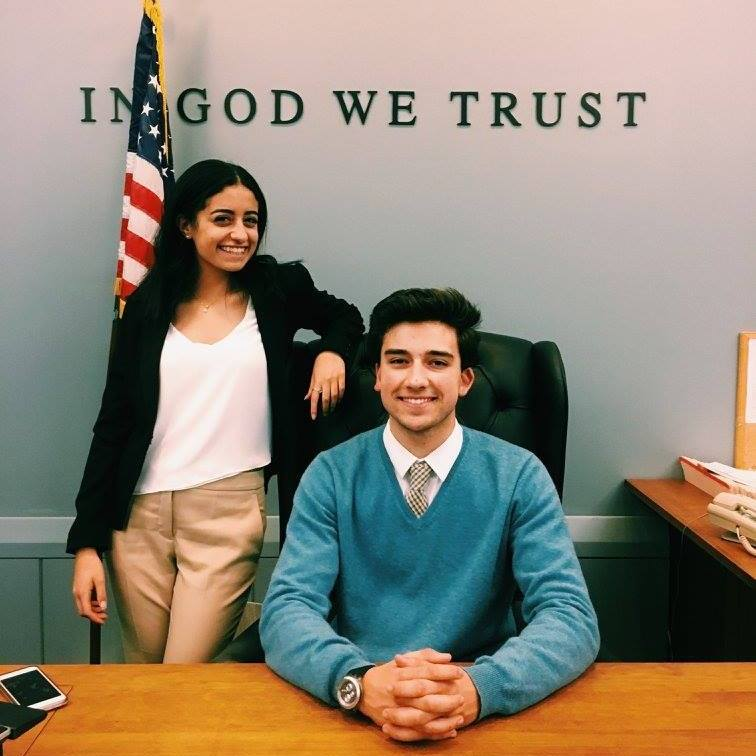

Hi!
I like coding and politics. When I came to Brown University I knew I wanted to get involved in government. But I didn't know how. After I took my first CS class at Brown, I realized I really enjoyed coding and now I'm majoring in Political Science and Computer Science. All this is coming to a head in my biggest project to date: Bears@Work. As the founder and CEO of Bears@Work I am working with Governor Gina Raimondo to create real world, $15/hr internships for beginners in Brown CS.
When I'm not trying to create the next employment agency, I like to row boats (I walked on to Brown Men's Crew), prosecute murderers in Brown Mock Trial as captain of my team and be an entrepreneur.